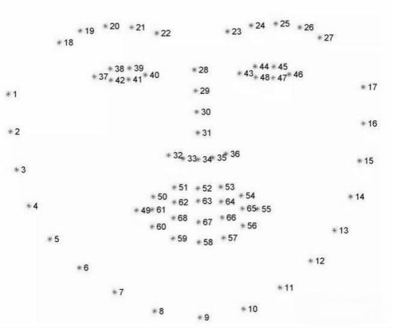
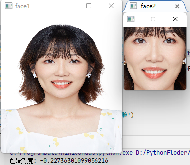

任务二 人脸矫正
【任务描述】
通过任务一，我们已经完成了人脸的检测，下一步我们将进行人脸矫正，事实上人脸矫正是是一个中间步骤，首先是人脸检测，然后是人脸对齐，人脸对齐的结果可以用于：人脸识别，属性计算，表情识别等。
【任务实施】
步骤1 使用dlib进行人脸关键点定位
除了OpenCV，还有一种比较简单的人脸检测的方法，就是使用Dlib进行人脸检测（dlib 可使用pip3 install dlib 安装）。同样地，使用Dlib进行人脸检测也是需要一个已训练好的人脸检测模型：shape_predictor_68_f ace_landmarks.dat。这里我放上下载链接链接可供大家下载: https://pan.baidu.com/s/ 1JZm2p8ccKUbdAVGlSuebNg 提取码: wgun。接着，我们开始写代码：
import cv2
import dlib
detector=dlib.get_frontal_face_detector()
predictor=dlib.shape_predictor('shape_predictor_68_face_landmarks.dat')
img=cv2.imread('opencv_image/lena.jpg')
print(img)
gray=cv2.cvtColor(img,cv2.COLOR_BGR2GRAY)
dets=detector(gray,1) #获得人脸个数
for k,d in enumerate(dets):
shape=predictor(img,d)
for i in range(68):
cv2.circle(img,(shape.part(i).x,shape.part(i).y),
1,(0,255,0),-1,8)
cv2.putText(img,str(i),(shape.part(i).x,shape.part(i).y),
cv2.FONT_HERSHEY_SIMPLEX,.5,(255,0,0),1)
cv2.imshow('face',img)
cv2.waitKey(0)
在dlib中，定义人脸有68特征,如图所示,我们可以通过循环，一个一个画出来。人脸的关键点如下：

程序运行结果如下：

步骤2 人脸矫正
人脸矫正的前提是已经获得了人脸的关键点，我们将会使用人脸的关键点进行人脸矫正，具体步骤如下：
- 人脸关键点检测
- 人脸旋转角度计算
- 坐标变换
- 人脸仿射变换
第一个步骤在上个小任务已经完成，我们简化一下代码，使用图片进行人脸矫正，可以得到如下的代码：
import dlib
import cv2
import numpy as np
import math
detector=dlib.get_frontal_face_detector()
predictor=dlib.shape_predictor('shape_predictor_68_face_landmarks.dat')
#得到人脸
def get_face(image_path,save=False):
image=cv2.imread(image_path)
gray = cv2.cvtColor(image, cv2.COLOR_BGR2GRAY)
dets = detector(gray, 1) # 获得人脸个数
# print(dets)
face=None
if len(dets)==0:
print('未检测到人脸')
else:
face=correct_face(image, dets)
if save:
path=image_path.split('.')[0]
cv2.imwrite(path+'.jpg',face)
return face
if __name__ == '__main__':
image_path = r'D:\GPU_SY\Opencv\opencv_image\face1.jpg'
face = get_face(image_path)
cv2.imshow('img', face)
cv2.waitKey(0)
细心的同学会发现，在get_face() 函数中有个correct_face()函数未实现，这就是我们的第二步，人脸旋转角度计算：
# 人脸矫正
def correct_face(image,rects,size=128):
shape=predictor(image,rects[0])
x,y,w,h=get_face_rect(rects[0])
# 获得左右眼的坐标
x1,y1= shape.part(36).x, shape.part(36).y
x2,y2 = shape.part(45).x, shape.part(45).y
# 获取人脸区域
face=image[y:h,x:w]
width, height = face.shape[1], face.shape[0]
# 获取左右眼的夹角
h1=y2-y1
w1=x2-x1
a1=np.arctan(h1/w1)
a = math.degrees(a1) # 弧度转角度
print('旋转角度：%s°' % a)
# 这里使用弧度制
points=get_trainpose_point(x,y,w,h,a1)
points=np.array(points,np.float32)
# 将 旋转后的坐标 仿射变换到新的坐标
new_point=np.array([[0,0],[size,0],[size,size]],np.float32)
A1=cv2.getAffineTransform(points,dst=new_point)
d1=cv2.warpAffine(image,A1,(size,size),borderValue=125)
return d1
correct_face()函数中，也有2个函数为实现，分别是get_face_rect()用来获取人脸ROI区域，以及get_trainpose_point()用来进行坐标变换。get_face_rect()代码为如下：
# 获得人脸区域
def get_face_rect(rects):
x = rects.left()
y = rects.top()
w = rects.right()
h = rects.bottom()
return x,y,w,h
get_trainpose_point()用来对左边进行变换，这里我们是使用两只人眼(分别是36和45号关键点)与水平的夹角来计算人脸的旋转角度。并且根据旋转公式（假设对图片上任意点(x,y)，绕一个坐标点(rx0,ry0)逆时针旋转a角度后的新的坐标设为(x0, y0)）：
x0= (x - rx0)*cos(a) - (y - ry0)*sin(a) + rx0
y0= (x - rx0)*sin(a) + (y - ry0)*cos(a) + ry0
可以获得变换后的人脸坐标，具体代码如下：
# 获得人脸旋转后的坐标
def get_trainpose_point(x,y,w,h,angle):
# 求三角函数值 这里默认使用弧度制，所以输入的是弧度
sina=math.sin(angle)
cosa=math.cos(angle)
# 获得矩形的宽高
height=h-y
weidth=w-x
# 获得中心点坐标
centerx=int(x+weidth/2)
centery=int(y+height/2)
# 分别获得当前 左上角 右上角 右下角的坐标
left_point=np.array([x,y])
top_right_point=np.array([w,y])
bottom_right_point=np.array([w,h])
# 组合
points=np.concatenate((left_point,top_right_point,bottom_right_point))
# 分别获得旋转后的左上角右上角 右下角的坐标
points[0]=(points[0] - centerx) * cosa - (points[1] - centery) * sina + centerx
points[1]=(points[0] - centerx) * sina + (points[1] - centery) * cosa + centery
points[2] = (points[2] - centerx) * cosa - (points[3] - centery) * sina + centerx
points[3] = (points[2] - centerx) * sina + (points[3] - centery) * cosa + centery
points[-2]=(points[-2] - centerx) * cosa - (points[-1] - centery) * sina + centerx
points[-1]=(points[-2] - centerx) * sina + (points[-1] - centery) * cosa + centery
return points.reshape(-1,2)
程序运行结果为：

本任务实战代码如下,位于/xm3/rw2.ipynb 同学们来运行一下吧